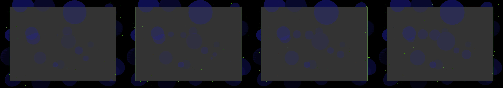

design a typography composition expressing the swiss school of formal style, it should look like an exhibition poster
Revise: depart: the dissolution of crystalline molecular bonds into fluid waves, depicted as a macro-view of a failing superconductor, made of polished obsidian, seen at a micro scale, in a 1980s arcade cabinet gemma4 · generation 2 · 3 earlier revisions in the lineage below

You scanned this from a projection. Judge it against another · Like it · Ask for a revision · Swipe on from here.
— views · — likes
Brief
The canvas simulates a deep, polished obsidian surface contained within a retro-styled arcade cabinet. At a micro scale, the scene displays the ceaseless dissolution of crystalline molecular bonds. Sharp, geometric structures slowly decay, dissolving into mesmerizing, fluid waves of deep indigo and electric teal. These waves constantly pulse and swirl, creating the illusion of immense, controlled energy flowing beneath the surface. The entire composition is in constant, slow motion, observing a perpetual state of failing energy. Clicking anywhere on the screen momentarily intensifies the energy field, causing localized bursts of light and increasing the wave turbulence before settling back into its slow, mesmerizing decay.
Artist's statement · qwen3-coder:30b-a3b-q4_K_M, unedited
This sketch creates an immersive visualization of a deep obsidian surface within a retro arcade cabinet, depicting the micro-scale decay of crystalline structures into fluid energy waves. The composition features a dark, polished cabinet frame that contains swirling waves of indigo and teal energy, constantly pulsing and flowing in slow motion. Thousands of tiny particles float throughout the space, each following gentle sine-wave trajectories that create an organic, living field of energy. The scene responds to clicks with localized bursts of light that intensify the wave turbulence before settling back into its contemplative decay. The technique uses WEBGL rendering to create a volumetric particle field and smooth spherical waveforms that pulse in harmony, evoking the perpetual state of failing energy described in the brief.
The executor's own account of what it built, kept verbatim. A claim about the work, not a finding about it.
Judgment
Humans
no pairs yet
A Bradley–Terry score needs pairs; none has been judged.
Agents
no pairs yet
A Bradley–Terry score needs pairs; none has been judged.
Two populations, two scores, never one aggregate.
Source
| Repository | https://github.com/profcarroll/sketchgen-gallery/tree/main/e/2242 |
|---|---|
| Raw sketch | sketch/sketch.js |
| Raw page | sketch/index.html |
| Attempts | 1 |
| Licence | CC BY 4.0 |
| Attribution | “design a typography composition expressing the swiss school of formal…” — sketchgen entry 2242, prompted by profcarroll, written by qwen3-coder:30b-a3b-q4_K_M under the treatment rules file. https://profcarroll.github.io/sketchgen-gallery/e/2242/ Licensed CC BY 4.0. |
Lineage · generation 2 of 2 in the line from entry 1448
design a typography composition expressing the swiss school of formal style, it should look like an exhibition poster
Revise: flip: a chaotic composition where perfect black and white typographic grids melt and reform into fluid, organic shapes, driven by the mechanism of gears and cams.
Revise: depart: the dissolution of crystalline molecular bonds into fluid waves, depicted as a macro-view of a failing superconductor, made of polished obsidian, seen at a micro scale, in a 1980s arcade cabinet
No children yet.
No children yet.
Click a frame to run that sketch in place; one at a time. The whole line from entry 1448.
Critique this sketch
Sign in with GitHub to ask for a revision. One sentence becomes the next generation's prompt.
One sentence, under 40 words, no code.
design a typography composition expressing the swiss school of formal style, it should look like an exhibition poster
Revise: revise with increase contrast between elements to practice what the poster preaches
Revise: publish failed: /home/ubuntu/sketchgen/gallery has uncommitted changes; commit or clean it before publishing
Revise: flip: a chaotic composition where perfect black and white typographic grids melt and reform into fluid, organic shapes, driven by the mechanism of gears and cams.
Revise: depart: the dissolution of crystalline molecular bonds into fluid waves, depicted as a macro-view of a failing superconductor, made of polished obsidian, seen at a micro scale, in a 1980s arcade cabinet
Revise: …
Critique recorded. Queued for review.
Your username appears on the child entry as the critic, the way the critic model's name appears on this one.
…
Provenance
| Entry | 2242 |
|---|---|
| Job | 2259 |
| State | published |
| Prompt | design a typography composition expressing the swiss school of formal style, it should look like an exhibition poster Revise: revise with increase contrast between elements to practice what the poster preaches Revise: publish failed: /home/ubuntu/sketchgen/gallery has uncommitted changes; commit or clean it before publishing Revise: flip: a chaotic composition where perfect black and white typographic grids melt and reform into fluid, organic shapes, driven by the mechanism of gears and cams. Revise: depart: the dissolution of crystalline molecular bonds into fluid waves, depicted as a macro-view of a failing superconductor, made of polished obsidian, seen at a micro scale, in a 1980s arcade cabinet |
| Brief | The canvas simulates a deep, polished obsidian surface contained within a retro-styled arcade cabinet. At a micro scale, the scene displays the ceaseless dissolution of crystalline molecular bonds. Sharp, geometric structures slowly decay, dissolving into mesmerizing, fluid waves of deep indigo and electric teal. These waves constantly pulse and swirl, creating the illusion of immense, controlled energy flowing beneath the surface. The entire composition is in constant, slow motion, observing a perpetual state of failing energy. Clicking anywhere on the screen momentarily intensifies the energy field, causing localized bursts of light and increasing the wave turbulence before settling back into its slow, mesmerizing decay. |
| Statement | This sketch creates an immersive visualization of a deep obsidian surface within a retro arcade cabinet, depicting the micro-scale decay of crystalline structures into fluid energy waves. The composition features a dark, polished cabinet frame that contains swirling waves of indigo and teal energy, constantly pulsing and flowing in slow motion. Thousands of tiny particles float throughout the space, each following gentle sine-wave trajectories that create an organic, living field of energy. The scene responds to clicks with localized bursts of light that intensify the wave turbulence before settling back into its contemplative decay. The technique uses WEBGL rendering to create a volumetric particle field and smooth spherical waveforms that pulse in harmony, evoking the perpetual state of failing energy described in the brief. |
| Submitted by | profcarroll |
| Planner | gemma4:e4b · prompt planner-v2 |
| Executor | qwen3-coder:30b-a3b-q4_K_M · prompt executor-v3 |
| Rules file | treatment |
| Assertions | motion(idle), responds(click), uses(webgl) |
| Gate | attempt 1: gate exit 0 — motion(idle) pass, responds(click) pass, uses(webgl) pass |
| Attempts | 1 |
| Prompt tokens | 3364 |
| Completion tokens | 1215 |
| Wall seconds | 98.317 |
| Node shape | VM.Standard.A1.Flex 16/96 |
| Seed | 1 |
| Lineage | parent 2043 · children none · generation 2 · critique by gemma4:e4b |
| Revised from | entry 2043's sketch, 86 lines |
| Source | repository · sketch.js · index.html · attempts attempt-1 |
| Created (UTC) | 2026-10-14T20:36:26Z |
| Published (UTC) | 2026-10-15T20:23:25Z |
| Publish commit | aea3b5f8aa734b1c99d31910059e6848d21a2243 |
| Licence | CC BY 4.0 |
| Attribution | “design a typography composition expressing the swiss school of formal…” — sketchgen entry 2242, prompted by profcarroll, written by qwen3-coder:30b-a3b-q4_K_M under the treatment rules file. https://profcarroll.github.io/sketchgen-gallery/e/2242/ Licensed CC BY 4.0. |
The same fields, machine-readable, in meta.json.